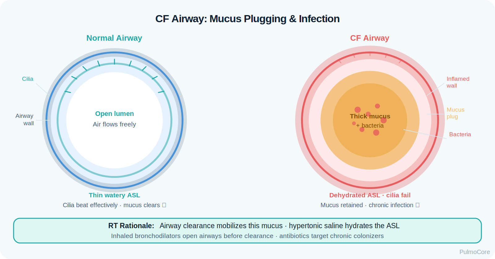
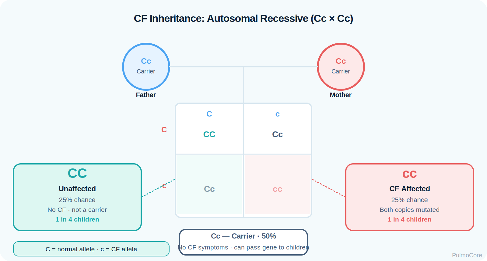

By the end of this cystic fibrosis module, learners should be able to connect CFTR dysfunction, thick secretions, impaired airway clearance, chronic infection, bronchiectasis, nutrition concerns, treatment sequencing, and escalation priorities.
1. Explain pathophysiology Describe how CFTR dysfunction dehydrates airway secretions and creates mucus plugging, infection, and inflammation.
2. Interpret diagnostics Use sweat chloride, genetic testing, sputum culture, PFTs, imaging, and clinical trends to frame CF assessment.
3. Plan RT interventions Sequence bronchodilator, inhaled medications, mucolytics, and airway clearance based on clinical goals.
4. Escalate appropriately Recognize hemoptysis, pneumothorax, worsening hypoxemia, severe exacerbation, and respiratory failure risk.
Video Overview
2-Minute Cystic Fibrosis Overview
Watch this quick overview before moving into the disease snapshot.
Disease Snapshot
Cystic fibrosis is caused by abnormal CFTR protein function. The airway surface becomes dehydrated, mucus becomes thick and sticky, and secretions are harder to clear. The result is chronic obstruction, infection, inflammation, airway damage, and declining lung function over time.
What it is: Autosomal recessive CFTR-related multisystem disease.
Primary pulmonary problem: Thick secretions and impaired mucociliary clearance.
For RTs, CF is not simply “lots of mucus.” It is a chronic airway clearance and infection-control problem. The RT must decide how to mobilize secretions, improve ventilation distribution, deliver inhaled therapies safely, and recognize when the patient is failing outpatient management.
Which statement best describes the core pulmonary problem in cystic fibrosis?
Anatomy & Pathophysiology
CFTR dysfunction disrupts chloride, bicarbonate, salt, and water movement across epithelial surfaces. In the airways, the surface liquid becomes dehydrated. Cilia cannot clear secretions effectively, mucus accumulates, bacteria persist, and chronic inflammation damages airway walls.
Visual focus: Use this image to reinforce the cause → effect chain from CFTR dysfunction to airway obstruction and infection.
What Changes in the CF Airway
CF Change
What Happens
Why It Matters
Dehydrated airway surface
Mucus becomes thick and sticky.
Cilia cannot move secretions effectively.
Mucus plugging
Secretions obstruct small and medium airways.
Causes air trapping, atelectasis, crackles, wheeze, and V/Q mismatch.
Chronic infection
Pathogens persist in retained secretions.
Drives inflammation and exacerbations.
Bronchiectasis
Airways become permanently dilated and damaged.
Worsens secretion retention and airflow obstruction.
Systemic involvement
Pancreas, GI tract, sweat glands, and nutrition are affected.
Explains poor growth, malabsorption, and high nutrition needs.

RT decision-making: A narrowed mucus-filled airway explains why airway clearance, inhaled therapies, hydration strategies, and infection monitoring are central to CF care.
Danger Sign
A CF patient with sudden pleuritic chest pain, acute dyspnea, significant hemoptysis, or rapidly increasing oxygen need needs urgent evaluation. Do not treat these as “just more mucus.”
Click the CF Hotspots
Click each hotspot to reveal how that mechanism contributes to cystic fibrosis lung disease.
Start here: Click all four hotspots to complete this activity.
0 / 4 hotspots reviewed
Genetics, Systems & High-Yield Associations
CF is inherited in an autosomal recessive pattern and affects epithelial secretions in multiple organs. RTs focus heavily on pulmonary consequences, but nutrition, pancreatic enzymes, hydration, infection risk, and medication timing all influence respiratory status.

Visual focus: CF is inherited; the RT does not diagnose genetics, but understanding inheritance helps make sense of screening, family education, and early diagnosis.
Poor nutrition can worsen respiratory muscle strength and outcomes.
Sweat glands
High sweat chloride; salt loss risk.
Supports diagnosis and explains salt/hydration teaching.
GI tract
Meconium ileus, constipation, malabsorption.
Systemic status can affect breathing tolerance.
Microbiology
Chronic pathogens may include Staph aureus, H. influenzae, and Pseudomonas.
Culture results guide antimicrobial plans and infection control.
Sort the CF Findings
Choose the best category for each item, then check your answers.
Bronchiectasis
Steatorrhea
Recurrent productive cough
Significant hemoptysis
Pancreatic insufficiency
Complete the sorting activity to continue.
Clinical Manifestations
CF presentation varies by age and disease stage. RT assessment focuses on cough, sputum, breath sounds, work of breathing, oxygenation, exercise tolerance, airway clearance routine, exacerbation pattern, and treatment adherence barriers.
Ask what is different from baseline. A CF patient may always cough, but increased sputum, darker sputum, decreased FEV₁, new oxygen need, or reduced tolerance of airway clearance suggests a pulmonary exacerbation.
Diagnostics & Assessment
CF diagnosis and monitoring combine screening, confirmatory testing, microbiology, lung function, imaging, and trend-based clinical assessment.
Core Diagnostic Tools
Test / Data
CF Pattern
RT Relevance
Newborn screen
Identifies infants at risk for CF.
Earlier therapy and monitoring can begin.
Sweat chloride
Elevated sweat chloride supports CF diagnosis.
High-yield board association.
CFTR genetic testing
Identifies disease-causing variants and modulator eligibility.
Explains why some patients receive CFTR modulators.
Sputum culture
Identifies airway pathogens.
Guides antibiotic planning and infection control.
PFTs
Obstructive pattern; FEV₁ trend is important.
Declining FEV₁ can signal exacerbation or progression.
Supports severity assessment and complication detection.
PFT Pattern
Many CF patients develop obstructive physiology as mucus plugging, bronchiectasis, and airway inflammation progress. FEV₁ trend is often more clinically useful than a single isolated number.
Culture and Infection Control
Airway cultures matter because chronic organisms can guide antibiotic therapy. RTs must follow infection-control procedures carefully, especially with shared equipment or clinic spaces.
Pulmonary Exacerbation Recognition
A pulmonary exacerbation is a clinically meaningful worsening from baseline. RTs should connect symptoms, sputum changes, oxygenation, lung function trends, and treatment response.
Exacerbation Clue
Why It Matters
Increased cough or sputum
May indicate infection, inflammation, or ineffective clearance.
Change in sputum color/thickness
Can suggest infectious or inflammatory worsening.
Drop in FEV₁ from baseline
Objective sign of worsening airflow obstruction.
New/worsening hypoxemia
Signals V/Q mismatch, atelectasis, or progression.
Fatigue or poor airway clearance tolerance
May indicate increased work of breathing or systemic illness.
Mild concern Small increase in cough but stable SpO₂, energy, and baseline routine.
Moderate concern More sputum, lower tolerance, abnormal breath sounds, or measurable FEV₁ drop.
High concern New oxygen need, severe dyspnea, hemoptysis, chest pain, fatigue, or poor response.
Exacerbation Decision Activity
A CF patient reports increased cough, thicker green sputum, fatigue, and a drop in FEV₁ from baseline. What is the best interpretation?
Severity & Red Flags
The key question is whether the patient can clear secretions, maintain gas exchange, tolerate therapy, and avoid complications.
Red Flag
Why It Matters
Significant hemoptysis
Can indicate airway bleeding and may require urgent intervention.
Sudden pleuritic chest pain with dyspnea
Concern for pneumothorax.
New or rapidly increasing oxygen requirement
Suggests worsening V/Q mismatch, atelectasis, infection, or respiratory failure risk.
Altered mental status or severe fatigue
May indicate hypoxemia, hypercapnia, sepsis, or impending failure.
Poor response to intensified airway clearance
Suggests need for provider reassessment and escalation.
Severe dehydration or heat illness
Salt loss and thick secretions can worsen pulmonary status.
Management & Treatment
CF management combines airway clearance, inhaled medications, infection management, nutrition support, exercise, and disease-modifying therapy when eligible. RT priorities include treatment sequence, patient tolerance, infection control, and response assessment.
Pulmonary Therapies
Therapy
Why It Helps
RT Note
Bronchodilator
Relieves bronchospasm and may improve aerosol delivery.
Often given before mucolytics/airway clearance when ordered.
Improve CFTR protein function in eligible patients.
Disease-modifying; does not eliminate need for monitoring.
Treatment Sequence Concept
Exact sequence may vary by order set and patient plan, but common logic is: open the airway, thin secretions, mobilize secretions, then deliver therapies that should remain in the airway after clearance when appropriate.
CF Airway Clearance Sequence
Select the steps in the best general order for a CF airway clearance session.
Assess baseline status and tolerance
Administer bronchodilator if ordered
Give inhaled mucolytic/hydrating therapy as ordered
Perform airway clearance technique
Administer inhaled antibiotic after clearance if ordered
Reassess breath sounds, sputum, SpO₂, WOB
Complete the sequence activity to continue.
Advanced Disease & Escalation
Advanced CF lung disease may include severe bronchiectasis, chronic hypoxemia, pulmonary hypertension, frequent exacerbations, hypercapnia, and respiratory failure. Some patients may require noninvasive support, high-flow oxygen strategies, ICU care, or transplant evaluation.
Escalation goal: Support gas exchange while treating secretion retention, infection, and work of breathing.
Ventilation concept: Account for obstructive physiology, secretion burden, air trapping, and infection-control needs.
Board Pearl
In CF questions, do not stop at oxygen. Think airway clearance, sputum culture, inhaled/IV antibiotics as ordered, bronchodilator/mucolytic sequence, nutrition support, and complication screening.
Respiratory Therapist Role
The RT is central to CF airway clearance, aerosol therapy, pulmonary function monitoring, infection-control practices, patient education, and escalation. The RT should compare current findings to baseline and reassess after each intervention.
This guided case reveals one clinical stage at a time. Learners make an RT decision, receive feedback, and then continue to the next stage.
Stage 1: Initial Presentation
A 17-year-old with cystic fibrosis reports three days of increased cough, thicker green sputum, and fatigue. They usually complete airway clearance twice daily but skipped several treatments this week.
RR 26/min
SpO₂ 91% on room air
Breath Sounds Coarse crackles, scattered wheeze
Decision Question: What is the RT priority?
Stage 2: Treatment Planning
The patient is ordered albuterol, hypertonic saline, airway clearance with oscillatory PEP, and inhaled antibiotic therapy.
Decision Question: Which sequencing principle is most appropriate?
Stage 3: Worsening Data
After therapy, the patient remains tachypneic. SpO₂ is now 88% on room air. FEV₁ is significantly below baseline, and sputum culture is pending.
Decision Question: What does this pattern suggest?
Stage 4: Complication Screen
The patient suddenly develops sharp right-sided chest pain and increased dyspnea during the visit.
Decision Question: What complication should be considered immediately?
Case Wrap-Up
RT Takeaway: In CF, compare today with baseline. Increased sputum, lower SpO₂, reduced FEV₁, fatigue, or poor treatment tolerance can signal exacerbation.
If the patient worsens: significant hemoptysis, sudden pleuritic pain, increased oxygen need, altered mental status, or severe fatigue require urgent escalation.
Knowledge Check
Board-Style Practice
Answer each question to complete this activity. Answer choices shuffle each time the lesson opens.
Question 1
A child has recurrent respiratory infections, poor weight gain, greasy stools, and elevated sweat chloride. What diagnosis is most consistent with this pattern?
Question 2
Which RT intervention is most central to routine pulmonary care in cystic fibrosis?
Question 3
Which finding is most concerning in a CF patient during airway clearance?
Question 4
A CF patient receives albuterol, hypertonic saline, airway clearance, and inhaled antibiotic. Which general sequencing principle is best?
0 / 4 questions answered
FAQ
Common Cystic Fibrosis Questions
What is the simplest way to understand CF?
CF is a CFTR-related disease where secretions become thick and difficult to clear. In the lungs, that causes mucus plugging, infection, inflammation, and bronchiectasis.
Why does CF affect the pancreas and GI tract?
CFTR dysfunction affects epithelial secretions in multiple organs. Thick secretions can block pancreatic ducts, leading to enzyme deficiency and malabsorption.
Why is airway clearance so important?
Retained secretions are central to obstruction and infection risk. Airway clearance mobilizes mucus so the patient can cough it out more effectively.
What does sweat chloride tell us?
Sweat chloride measures chloride concentration in sweat. Elevated values support CF diagnosis when interpreted with clinical and genetic information.
Why do sputum cultures matter?
Cultures identify airway pathogens and help guide antibiotic therapy and infection-control decisions.
What is the biggest RT mistake in CF questions?
Focusing only on oxygen and ignoring secretion clearance, treatment sequence, culture-guided infection care, and baseline comparison.
What are CFTR modulators?
CFTR modulators are disease-modifying medications that improve CFTR protein function for patients with eligible genetic variants.
Summary & Clinical Pearls
Cystic fibrosis is an inherited CFTR-related disease that causes thick secretions, impaired mucociliary clearance, recurrent infection, inflammation, bronchiectasis, and progressive obstructive lung disease. RT care centers on airway clearance, aerosol sequencing, response assessment, infection control, and timely escalation.
Must know: CFTR dysfunction causes thick secretions and impaired clearance.